FASM Editor - редактор ASM кода, предназначен для удобства разработки, был разработана для себя и сообщества ассемблер программистов. Данная программа была написана на Delphi. В программе был реализован синтаксический анализатор, подсветка кода, авто-дополнение кода, генерация списка экспортируемых функций из DLL.
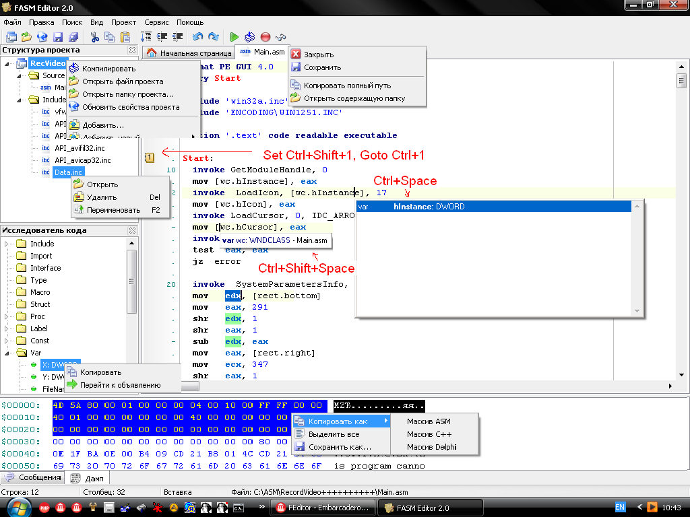
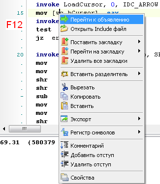
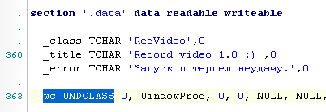
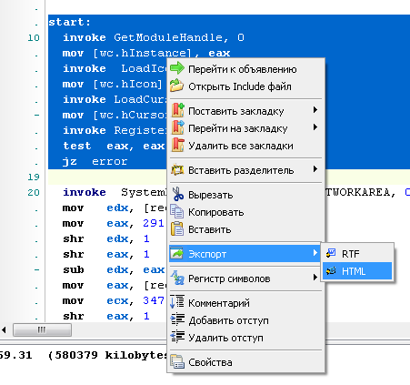
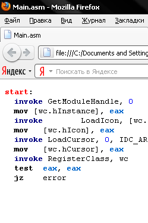
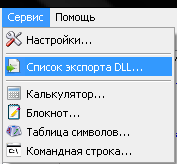
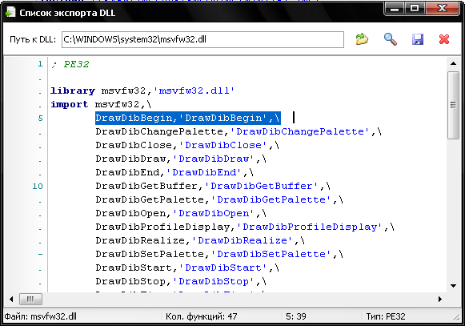
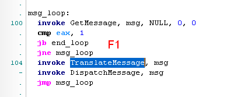
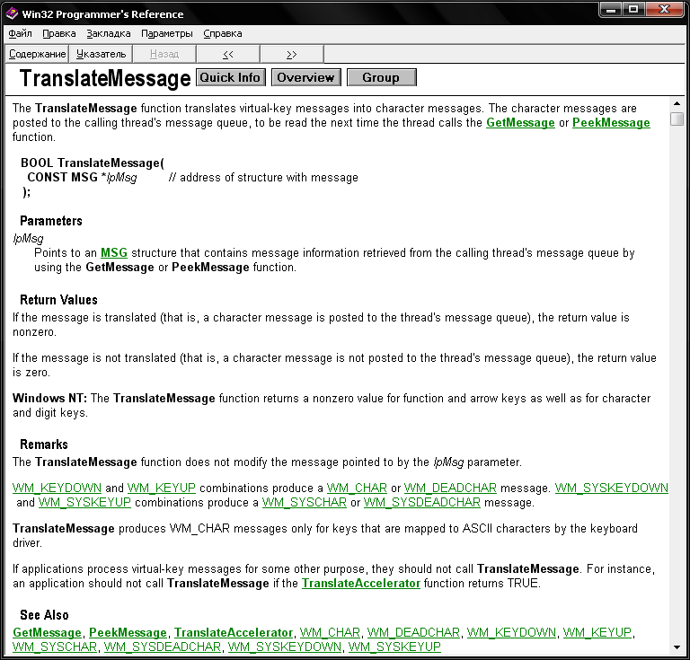
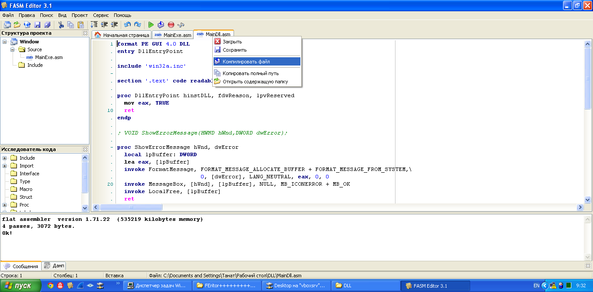
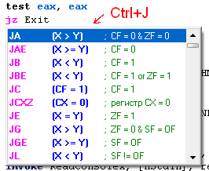